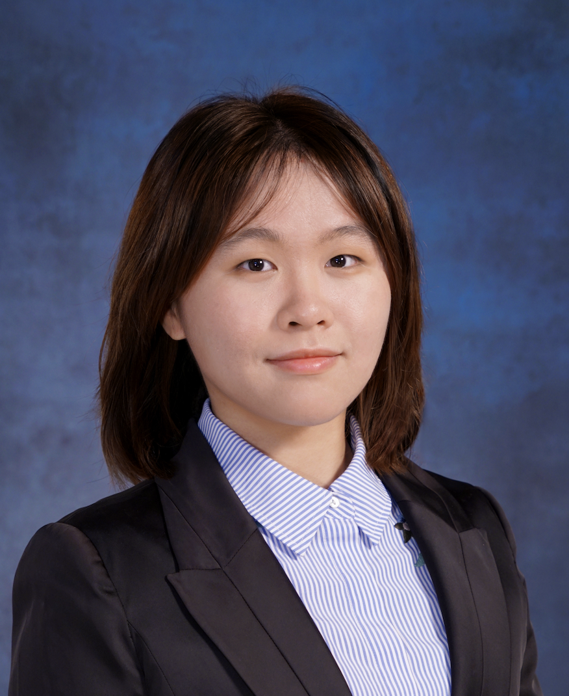

本科生 | 密歇根大学安娜堡分校
我目前就读于密歇根大学安娜堡分校，攻读数学、数据科学和统计学相关本科学位。我的研究兴趣包括机器学习与优化。转入密歇根大学之前，我曾在香港中文大学（深圳）学习金融工程（量化金融方向）。
2024 年 8 月 - 预计 2026 年 5 月
专业方向：
核心课程：机器学习、高级微积分、数据结构与算法、回归分析、统计计算、组合数学、金融数学
研究生阶段课程：实分析、非线性规划、统计理论、实验设计、优化、随机过程（I & II）、随机优化与机器学习
2022 年 9 月 - 2024 年 7 月
专业方向：金融工程 - 量化金融
核心课程：数据库系统、数据结构、随机过程、微分方程、优化、概率与统计、离散数学、微分方程